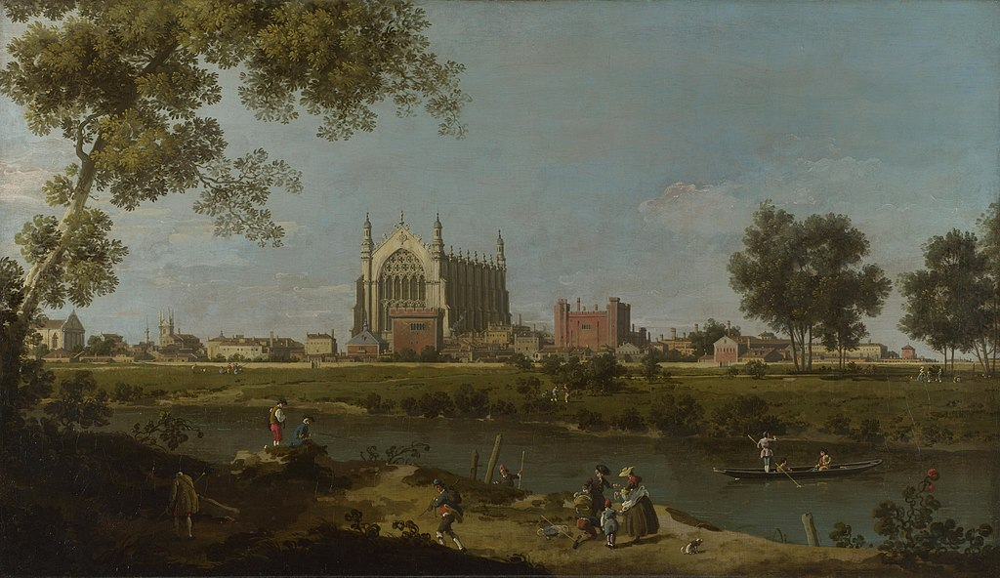

<head>
<meta charset="UTF-8" />
<meta name="keywords" content="drawing, painting" />
<meta name="description" content="drawings by Sunjy" />
<title>Sunjy</title>
<link rel="shortcut icon" type="image/x-icon" href="../../mImages/mCommon/favicon.ico" media="screen" />
<link rel="stylesheet" type="text/css" href="../../mCsses/mCommon/mCssA.css" />
<link rel="stylesheet" type="text/css" href="../../mCsses/mCommon/mCssB.css" />
<link rel="stylesheet" type="text/css" href="../../mCsses/mCommon/mCssC.css" />
<link rel="stylesheet" type="text/css" href="../../mCsses/mCommon/mCssD.css" />
<link rel="stylesheet" type="text/css" href="../../mCsses/mContent/mCssA.css" />
<link rel="stylesheet" type="text/css" href="../../mCsses/mContent/mCssB.css" />
<link rel="stylesheet" type="text/css" href="../../mCsses/mContent/mCssC.css" />
<link rel="stylesheet" type="text/css" href="../../mCsses/mContent/mCssD.css" />
</head>
<script type="text/javascript" src="../../mScripts/mContent/mContentAA.js" /></script>
<script type="text/javascript" src="../../mScripts/mContent/mContentAB.js" /></script>
<script type="text/javascript" src="../../mScripts/mContent/mContentAC.js" /></script>
<script type="text/javascript" src="../../mScripts/mContent/mContentAD.js" /></script>
<script type="text/javascript"></script> 
<script type="text/javascript">
document.write('<div class="mImgAbsolute"></div>');
/*
document.write('<p class="mFontSizeBColor" />From a white paper...</p>');
document.write('<table class="center"><tr><td>');
document.write('');
document.write('</td></tr></table>');
*/
</script>


<script type="text/javascript">
document.write('<p class="mFontSizeBColor" />Eton College</p>');
document.write('<p class="mFontSizeSColor" />“Eton College” by Canaletto depicts the famous school and its chapel as viewed from across the river Thames. The general position of the chapel, as shown, is correct, but many of the other buildings’ details are invented.<br><br>Canaletto did staying nearby at Windsor in 1747, but this painting seems to be a later work that was produced from sketches and his memory.<br><br>The composition is an imaginary view referred to as ‘capriccio,’ and the boundary in some of Canaletto’s works between the real and the imaginary is never quite clearcut.<br><br>The view may not be an accurate record, but it is expertly composed, with the various figures who are fishing, punting, and strolling by the river providing animation to the scene.<br><br>The tree framing on either side of the composition and the shadowed foreground all lead the eye to the college.<br><br>Eton College was founded in 1440 by King Henry VI of England to give needy students with a free education that would allow them to attend King’s College in Cambridge. <br><br>Henry planned to make the nave of the college chapel the largest in Europe, with religious relics to set up the status of the college. <br><br>However, when Edward IV deposed Henry VI in 1461, the new king withdrew the college’s generous finances, and it fell onto wealthy patrons to support the school. Today, Eton College is an English independent boarding school for boys and one of the most expensive schools in the UK.<br></p>');
document.write('<table class="center" /><tr><td>');
document.write('<br>Canaletto did staying nearby at Windsor in 1747, but this painting seems to be a later work that was produced from sketches and his memory.<br><br>The composition is an imaginary view referred to as ‘capriccio,’ and the boundary in some of Canaletto’s works between the real and the imaginary is never quite clearcut.<br><br>The view may not be an accurate record, but it is expertly composed, with the various figures who are fishing, punting, and strolling by the river providing animation to the scene.<br><br>The tree framing on either side of the composition and the shadowed foreground all lead the eye to the college.<br><br>Eton College was founded in 1440 by King Henry VI of England to give needy students with a free education that would allow them to attend King’s College in Cambridge. <br><br>Henry planned to make the nave of the college chapel the largest in Europe, with religious relics to set up the status of the college. <br><br>However, when Edward IV deposed Henry VI in 1461, the new king withdrew the college’s generous finances, and it fell onto wealthy patrons to support the school. Today, Eton College is an English independent boarding school for boys and one of the most expensive schools in the UK.<br>" />');
document.write('</td></tr></table>');
</script>


